Chapter 26: Tout, chaque, quelqu’un…¶
Les indéfinis
Sab, har, ek-ek, kuch, thode, kai, koi, kuch bhi, wahi, aisa — ye chhote words indefinites kehlate hain, kyunki ye logon aur cheezon ke baare me baat karte hain bina ye bataye ki thik-thik kaun se. French me ye har jagah hain. Kuch adjectives ki tarah agree karte hain, kuch kabhi nahi badalte, aur ek — tous — to apna uchcharan tak badal leta hai.
Ek line me
Indefinites bina naam liye batate hain ki kitne ya kaun se. Kuch noun se pehle aate hain (chaque jour, quelques amis); kuch uski jagah le lete hain (chacun, quelques-uns, tous).
26.1 Tout, toute, tous, toutes¶
Tout sabse common indefinite hai, aur iske teen kaam hain: adjective (noun se pehle), pronoun (noun ki jagah) aur adverb (adjective se pehle). Ek-ek karke seekho.
Adjective ki tarah: “sab, poora, har”¶
Noun se pehle tout us noun se agree karta hai aur aam taur par uske baad article aata hai (le, la, les, mes, ces…).
| Singular — poora | Plural — sab, har | |
|---|---|---|
| Masculine | tout le gâteau | tous les jours |
| Feminine | toute la journée | toutes les semaines |
- Il a mangé tout le gâteau. — Usne poora cake kha liya.
- J’ai travaillé toute la journée. — Maine poora din kaam kiya.
- Je fais du sport tous les matins. — Main har subah sport karta hoon. (adjective tous = [too], s silent) [too lay ma-Tɛ̃]
- Toutes mes amies sont venues. — Meri saari saheliyan aayi.
- Tout le monde est là. — Sab yahan hain. (tout le monde = everybody — verb singular hota hai!)
Article ke bina singular tout / toute general statements aur fixed phrases me “koi bhi, har” ka matlab deta hai: à tout moment (kisi bhi waqt), en tout cas (har haal me), tout le temps (hamesha), toute personne (koi bhi vyakti — formal notices). Aur tous les deux / toutes les deux = dono.
- Nous sommes tous les deux d’accord. — Hum dono sehmat hain.
- Toute personne sans billet paiera une amende. — Bina ticket ke koi bhi vyakti jurmana bharega. (ek typical sign)
Pronoun ki tarah: tout = sab kuch, tous [tus] = unme se sab¶
Akela tout ka matlab “sab kuch” hai. Tous aur toutes ka matlab “sab (unme se)” hai. Yahan awaaz ka jaal hai: pronoun tous ka uchcharan [tus] hota hai, s ke saath. Adjective tous (noun se pehle) [too] hota hai.
- Tout va bien. — Sab theek hai.
- J’ai tout compris. — Mujhe sab samajh aa gaya. (chhote adverb ki tarah: participle se pehle)
- Mes cousins ? Ils sont tous venus. — Mere cousins? Wo sab aaye. — bolo [TUS] [eel sõ TUS vuh-NEW]
- Ces films, je les ai tous vus. — Ye films — maine sab dekh li hain. [TUS]
- Les filles sont toutes parties. — Ladkiyan sab chali gayi hain.
- Bonjour à tous ! — Sabko namaste! [ta TUS]
tous: [too] ya [tus]?
Noun se pehle tous [too] hota hai: tous les jours. Pronoun ke roop me (akela) [tus] hota hai: ils sont tous là, bonjour à tous.
Adverb ki tarah: “bahut, bilkul”¶
Adjective se pehle tout ka matlab “kaafi, bahut” hota hai: il est tout petit, elle est toute petite, elle est tout heureuse. Rule (ye sirf feminine consonant se pehle agree karta hai) Adverbs me samjhaya gaya hai. Ek confusion dhyan do: elles sont toutes contentes ka matlab “wo bahut khush hain” ya “wo sab khush hain” ho sakta hai — context decide karta hai.
26.2 Chaque ya chacun?¶
Dono ka matlab “har / ek-ek” hai, lekin kaam alag hain. Chaque adjective hai: ye hamesha singular noun se pehle aata hai aur kabhi nahi badalta. Chacun / chacune pronoun hai: ye noun ki jagah leta hai aur gender me uske saath agree karta hai. Dono hamesha singular hain.
| Word | Kaam | Example |
|---|---|---|
| chaque + noun | adjective, invariable | chaque jour, chaque semaine |
| chacun | pronoun, masculine | Chacun a son avis. |
| chacune | pronoun, feminine | Chacune de mes sœurs… |
- Chaque étudiant reçoit un badge. — Har student ko ek badge milta hai. (singular noun, singular verb)
- Chacun a son opinion. — Har kisi ki apni raay hoti hai. (chacun → son, singular)
- Chacune de mes sœurs habite dans une ville différente. — Meri har behen alag sheher me rehti hai.
- Ces livres coûtent dix euros chacun. — Ye kitabein das euro ki ek-ek hain.
- À chacun ses goûts. — Sabki apni pasand. (ek kahawat)
chaque + noun, chacun akela
Agar baad me noun aaye, to chaque use karo (chaque jour). Agar noun na aaye, to chacun/chacune (dix euros chacun).
Chaque jour aur tous les jours kareeb-kareeb ek jaise hain. Chaque har ek ko alag se zor deta hai; tous les regular aadat par zor deta hai. Rozmarra ki bolchaal me tous les jours zyada sunai deta hai.
26.3 Quelques, quelqu’un, quelque chose, quelque part¶
quelque family “kuch, thode, koi, kuch cheez, kahin” ko cover karti hai.
| French | Matlab | Example |
|---|---|---|
| quelques + plural noun | kuch, thode | quelques amis |
| quelques-uns / -unes | unme se kuch | j’en ai lu quelques-uns |
| quelqu’un | koi | Quelqu’un a appelé. |
| quelque chose | kuch (cheez) | J’ai quelque chose pour toi. |
| quelque part | kahin | Mes clés sont quelque part. |
| quelquefois | kabhi-kabhi | On sort quelquefois. |
- J’ai quelques questions. — Mere paas kuch sawaal hain.
- Ses romans ? J’en ai lu quelques-uns. — Uske novels? Maine unme se kuch padhe hain. (en ke saath — Y, en & pronoun order dekho)
- Des pommes ? Il en reste quelques-unes. — Seb? Kuch bache hain. (pomme feminine hai → quelques-unes)
- Quelqu’un a laissé un message. — Kisi ne message chhoda hai.
- Il y a quelque temps, j’habitais à Lille. — Kuch waqt pehle main Lille me rehta tha. (singular quelque: sirf aise set phrases me)
quelqu’un de… / quelque chose de… + adjective¶
Adjective jodne ke liye beech me de lagao, aur adjective ko masculine hi rakho. Yahi pattern rien, personne aur autre ke saath bhi chalta hai.
- C’est quelqu’un de très gentil. — Wo bahut achha insaan hai. (gentil aurat ke liye bhi masculine rehta hai)
- Tu veux boire quelque chose de chaud ? — Kya tum kuch garam peena chahoge?
- Rien de nouveau. · Personne d’autre. — Kuch naya nahi. · Aur koi nahi.
quelque chose de bon
quelqu’un / quelque chose / rien / personne + de + masculine adjective: quelque chose de bon, quelqu’un d’intelligent, rien de grave.
26.4 Koi nahi, kuch nahi, ek bhi nahi: negative side¶
Har “some” word ka ek “no” partner hota hai. Personne, rien, aucun(e) aur nulle part ko verb se pehle ne chahiye; inka poora grammar (past me position, pas de, ne… que) Saying no me hai. Yahan hum jodiyon par aur inhe subjects ki tarah use karne par focus karte hain.
| Positive | Negative | Example |
|---|---|---|
| quelqu’un, tout le monde | ne… personne | Je ne vois personne. |
| quelque chose, tout | ne… rien | Je ne comprends rien. |
| quelques, plusieurs, tous | ne… aucun(e) | Je n’ai aucune idée. |
| quelque part, partout | ne… nulle part | Je ne le trouve nulle part. |
- Personne n’est venu. — Koi nahi aaya. (subject ke roop me: personne + ne + verb, pas nahi)
- Rien n’a changé. — Kuch nahi badla.
- Aucun de mes amis n’a répondu. — Mere kisi bhi dost ne jawab nahi diya. (aucun singular hai → a répondu)
- — Tu as des questions ? — Non, aucune. — Kya tumhare koi sawaal hain? — Nahi, ek bhi nahi. (feminine: question)
26.5 Quantity scale: aucun, quelques, plusieurs, certains, tous¶
Quantity words ko ek line me rakho, zero se lekar sab tak. Har ek noun se pehle aur akela pronoun ki tarah kaam karta hai.

Plusieurs: kai¶
Plusieurs kabhi nahi badalta (koi feminine form nahi), article nahi leta, aur hamesha plural hota hai.
- Je l’ai appelé plusieurs fois. — Maine use kai baar phone kiya. (fois feminine hai — plusieurs wahi rehta hai)
- Des vélos ? On en a plusieurs. — Cycles? Hamare paas kai hain.
Certain(e)s: kuch (sab nahi)¶
Plural noun se pehle certains / certaines article nahi leta aur agree karta hai. Pronoun ke roop me certains ka matlab “kuch log” hai. Singular me noun se pehle un certain ka matlab “ek khaas” hai; noun ke baad certain ka matlab “pakka” hai.
- Certaines personnes ne mangent pas de viande. — Kuch log meat nahi khate.
- Certains pensent que c’est trop cher. — Kuch (log) sochte hain ki ye bahut mehnga hai.
- un homme d’un certain âge · une victoire certaine — ek adhed umar ka aadmi · ek pakki jeet
plusieurs, certains, quelques ke saath article nahi
plusieurs amis, certains amis, quelques amis bolo — kabhi “des plusieurs” ya “les certains” nahi.
26.6 N’importe qui, quoi, où… — “koi bhi, kuch bhi”¶
N’importe (literally “koi farak nahi padta”) + question word ka matlab hai “koi bhi … , farak nahi ki kaun sa”. Ismein aksar halka negative tone hota hai: laparwah, random, mamooli.
| French | Matlab | Example |
|---|---|---|
| n’importe qui | koi bhi (insaan) | N’importe qui peut le faire. |
| n’importe quoi | kuch bhi; bakwaas | Il dit n’importe quoi. |
| n’importe où | kahin bhi | On peut dormir n’importe où. |
| n’importe quand | kabhi bhi | Appelle-moi n’importe quand. |
| n’importe comment | jaise-taise, laparwahi se | Ne range pas n’importe comment. |
| n’importe quel(le)(s) + noun | koi bhi (+ noun) | n’importe quelle couleur |
| n’importe lequel / laquelle… | unme se koi bhi ek | Prends n’importe lequel. |
- Ce n’est pas difficile : n’importe qui peut le faire. — Ye mushkil nahi hai: koi bhi ise kar sakta hai.
- Arrête de dire n’importe quoi ! — Bakwaas band karo!
- Viens n’importe quand, je suis à la maison. — Kabhi bhi aa jao, main ghar par hoon.
- — Quel stylo je prends ? — N’importe lequel. — Main kaun sa pen loon? — Koi bhi. (stylo masculine hai → lequel)
- Ce travail a été fait n’importe comment. — Ye kaam jaise-taise kiya gaya hai.
quelqu’un ya n’importe qui?
quelqu’un = ek khaas insaan jiska aap naam nahi lete; n’importe qui = koi bhi insaan, farak nahi ki kaun.
26.7 Autre, même aur tel¶
Autre: doosra, ek aur, ek-dusre¶
Autre sirf number me agree karta hai (autre / autres). Plural par dhyan do: noun se pehle des + adjective de ban jaata hai, isliye “other ideas” d’autres idées hota hai, “des autres idées” nahi.
- Tu veux un autre café ? — Kya tum ek aur coffee loge?
- Il y a d’autres solutions. — Aur bhi solutions hain.
- Les autres sont déjà partis. — Baaki log pehle hi ja chuke hain.
- J’ai deux frères : l’un est médecin, l’autre est ingénieur. — Mere do bhai hain: ek doctor hai, doosra engineer hai.
- Les voisins s’aident les uns les autres. — Padosi ek-dusre ki madad karte hain. (l’un l’autre / les uns les autres = each other)
- Tu veux autre chose ? · Demande à quelqu’un d’autre. — Kya tumhe kuch aur chahiye? · Kisi aur se poochho.
Même: wahi, khud, bhi¶
| Use | Matlab | Example |
|---|---|---|
| le / la / les + même(s) + noun | wahi (same) | le même prix, les mêmes erreurs |
| stressed pronoun + -même(s) | main khud, wo khud… | moi-même, eux-mêmes |
| même (adverb, invariable) | yahan tak ki | Même les enfants ont ri. |
| même si + indicative | chahe… to bhi | même s’il pleut |
- On a les mêmes chaussures ! — Hamare jootay ek jaise hain! (même number me agree karta hai)
- J’ai fait ce gâteau moi-même. — Ye cake maine khud banaya hai. (aur: toi-même, lui-même, elle-même, nous-mêmes, vous-même(s), eux-mêmes, elles-mêmes)
- Même mon père a compris la blague. — Mere papa tak ko joke samajh aa gaya.
- Même s’il pleut, on va au marché. — Chahe baarish ho, hum market jaayenge. (même si + indicative, si ki tarah)
- Il faisait froid, mais on est sortis quand même. — Thand thi, phir bhi hum bahar gaye.
Tel, telle, tels, telles: aisa¶
Tel adjective ki tarah agree karta hai. Un tel / une telle = aisa ek; plural me de tels / de telles (adjective se pehle des nahi, de). Tel que = jaise, jaisa ki.
- Je n’ai jamais entendu un tel bruit. — Maine aisa shor kabhi nahi suna.
- De telles erreurs coûtent cher. — Aisi galtiyan mehngi padti hain.
- des fruits tropicaux tels que la mangue et l’ananas — tropical fruits jaise aam aur ananas (tels, fruits se agree karta hai)
- Tel père, tel fils. — Jaisa baap, waisa beta.
26.8 Agreement ek nazar me¶
Kaun se indefinites badalte hain, aur kaun kabhi nahi? Ye table paas rakho.
| Word | Forms | Number | Example |
|---|---|---|---|
| tout | tout, toute, tous, toutes | sing. / pl. | toutes les filles |
| chaque | kabhi nahi badalta | sirf sing. | chaque fille |
| chacun | chacun, chacune | sirf sing. | chacune d’elles |
| aucun | aucun, aucune | sing. (lagbhag hamesha) | aucune fille |
| quelques | quelques; pron. quelques-uns, quelques-unes | pl. | quelques filles |
| quelqu’un · quelque chose | kabhi nahi badalte | sing., masc. | quelque chose de beau |
| plusieurs | kabhi nahi badalta | sirf pl. | plusieurs filles |
| certain | certains, certaines | pl. (article nahi) | certaines filles |
| autre · même | autre(s) · même(s) | sirf number | les mêmes filles |
| tel | tel, telle, tels, telles | sing. / pl. | une telle fille |
Singular words
chaque, chacun, aucun, personne, rien, quelqu’un aur tout le monde singular verb lete hain: tout le monde est là, chacun a son avis.
26.9 Seekhne walon ki asli galtiyan — aur plan karne ko ek party¶
Indefinite ke jaal
- Galat: Tout le monde sont là.
- Sahi: Tout le monde est là.
-
Kyun: tout le monde grammar ke hisaab se singular hai, chahe matlab bahut saare log hon.
-
Galat: Ils coûtent cinq euros chaque.
- Sahi: Ils coûtent cinq euros chacun.
-
Kyun: Baad me noun nahi → pronoun chacun. chaque ke baad noun aana zaroori hai.
-
Galat: Chaques jours, je cours.
- Sahi: Chaque jour, je cours. / Tous les jours, je cours.
-
Kyun: chaque hamesha singular hai aur kabhi -s nahi leta.
-
Galat: J’ai des autres idées.
- Sahi: J’ai d’autres idées.
-
Kyun: des + adjective + plural noun, de ban jaata hai: d’autres, de telles.
-
Galat: C’est quelqu’un gentil. / quelque chose nouvelle
- Sahi: C’est quelqu’un de gentil. / quelque chose de nouveau
-
Kyun: de jodo, aur adjective ko masculine rakho.
-
Galat: Personne n’est pas venu.
- Sahi: Personne n’est venu.
-
Kyun: personne, rien aur aucun pas ki jagah lete hain. Dono kabhi saath nahi.
-
Galat: Ils sont tous là [too].
- Sahi: Ils sont tous là [TUS].
- Kyun: Pronoun tous (baad me noun nahi) s ke saath bola jaata hai.
In real life — party plan karna¶
- — Alors, tout le monde vient samedi ? — — To, kya Saturday ko sab aa rahe hain?
- — Presque. Ils ont tous répondu, sauf Karim. Plusieurs amis viennent avec quelqu’un. — — Lagbhag. Karim ke alawa sabne jawab de diya hai. Kai dost kisi ko saath la rahe hain.
- — Et pour manger ? Chacun apporte quelque chose ? — — Aur khane ka? Kya har koi kuch laa raha hai?
- — Oui, mais pas n’importe quoi ! La dernière fois, on avait les mêmes plats. — — Haan, lekin kuch bhi nahi! Pichhli baar hamare paas wahi dishes thi.
- — C’est vrai, certains ont apporté trois salades et personne n’a pensé au dessert. — — Sach hai — kuch logon ne teen salads laye aur kisi ne dessert ke baare me nahi socha.
- — Cette fois, je fais une liste. Même toi, tu auras une tâche ! — — Is baar main list bana raha hoon. Tumhe bhi ek kaam milega!
À retenir: yaad rakho
- Indefinites bina naam liye batate hain ki kitne ya kaun se. Kuch noun se pehle aate hain (chaque jour, quelques amis); kuch uski jagah le lete hain (chacun, quelques-uns, tous).
- Noun se pehle tous [too] hota hai: tous les jours. Pronoun ke roop me (akela) [tus] hota hai: ils sont tous là, bonjour à tous.
- Agar baad me noun aaye, to chaque use karo (chaque jour). Agar noun na aaye, to chacun/chacune (dix euros chacun).
- quelqu’un / quelque chose / rien / personne + de + masculine adjective: quelque chose de bon, quelqu’un d’intelligent, rien de grave.
- plusieurs amis, certains amis, quelques amis bolo — kabhi “des plusieurs” ya “les certains” nahi.
- quelqu’un = ek khaas insaan jiska aap naam nahi lete; n’importe qui = koi bhi insaan, farak nahi ki kaun.
26.10 Practice — Indefinites¶
Exercise 1
Je cours ___ les matins.
- tout
- toute
- tous
- toutes
Jawaab
tous
matins masculine plural hai → tous les matins.
Exercise 2
Il a plu ___ la journée.
- tout
- toute
- tous
- toutes
Jawaab
toute
journée feminine singular hai → toute la journée.
Exercise 3
'Ils sont tous venus.' tous ka uchcharan kaise hota hai?
-
\[too\]
-
\[tus\]
-
\[toot\]
-
\[tooz\]
Jawaab
[tus]
Pronoun tous (baad me noun nahi) s ke saath bola jaata hai.
Exercise 4
___ étudiant reçoit un badge.
- Chaque
- Chacun
- Tous
- Quelques
Jawaab
Chaque
Singular noun aata hai → chaque.
Exercise 5
Personne ___ venu.
- n'est
- n'est pas
- est pas
- est
Jawaab
n'est
personne pas ki jagah leta hai: personne n'est venu.
Exercise 6
'Bakwaas band karo!' Arrête de dire ___ !
- quelque chose
- n'importe quoi
- rien
- tout
Jawaab
n'importe quoi
dire n'importe quoi = bakwaas karna.
Exercise 7
Ces livres coûtent dix euros ___. (ek-ek)
Jawaab
chacun
Baad me noun nahi → pronoun chacun (livre masculine hai).
Exercise 8
C'est quelqu'un ___ très gentil.
Jawaab
de
quelqu'un + de + masculine adjective.
Exercise 9
Des pommes ? Il en reste quelques-___.
Hint: pomme feminine hai
Jawaab
unes
Feminine pronoun: quelques-unes.
Exercise 10
J'ai fait ce gâteau moi-___.
Jawaab
même
moi-même = main khud.
Exercise 11
Galat word par tap karo.
Tout le monde sont là.
Jawaab
Galat shabd: sont.
Sahi roop: Tout le monde est là.
tout le monde singular verb leta hai.
Exercise 12
Galat word par tap karo.
Il y a des autres solutions.
Jawaab
Galat shabd: des.
Sahi roop: Il y a d'autres solutions.
des + adjective + plural noun → de: d'autres.
Exercise 13
French ko uske matlab se milao.
| A | B |
|---|---|
| n'importe qui | kabhi bhi |
| n'importe où | jaise-taise |
| n'importe quand | koi bhi insaan |
| n'importe comment | kahin bhi |
Jawaab
n'importe qui — koi bhi insaan; n'importe où — kahin bhi; n'importe quand — kabhi bhi; n'importe comment — jaise-taise
n'importe + question word = koi bhi … .
Exercise 14
Words ko sahi order me lagao.
Shabd: a / Chacun / son / opinion
Jawaab
Chacun a son opinion
chacun singular hai → a, son.
Exercise 15
Words ko sahi order me lagao.
Shabd: la / compris / a / père / mon / blague / Même
Jawaab
Même mon père a compris la blague
noun phrase se pehle même = tak/bhi.
Exercise 16
Kisi ne kya nahi laaya?
Ise zor se padho, ya kisi se padhwao:
Pour la fête, tout le monde est venu. Chacun a apporté quelque chose : Paul du fromage, Léa des gâteaux. Mais personne n'a pensé au pain !
- bread
- cheese
- cakes
- drinks
Jawaab
bread
personne n'a pensé au pain = kisi ne bread ke baare me nahi socha.
Exercise 17
Party me kaun aaya?
Ise zor se padho, ya kisi se padhwao:
Pour la fête, tout le monde est venu. Chacun a apporté quelque chose : Paul du fromage, Léa des gâteaux. Mais personne n'a pensé au pain !
- sab log
- koi nahi
- kuch log
- sirf Paul aur Léa
Jawaab
sab log
tout le monde est venu = sab aaye.
Exercise 18
Jo sunai de wo likho.
Dictation. Kisi se ye vaakya zor se padhwao, phir likh lo.
Jawaab
Nous avons tous lu le même livre.
tous yahan pronoun hai [tus]; même = wahi.
Exercise 19
Zor se bolo — phir jodo: on peut commencer.
Tout le monde est là, on peut commencer
Jawaab
tout le monde + singular verb: est.
Next step
Ab qui, que, où, dont se ideas jodo Relative pronouns me — wahan tout ce qui / tout ce que (wo sab jo) bhi aata hai. Aaj apni family ko paanch indefinites se describe karo: tous, chacun, certains, quelqu’un, personne.